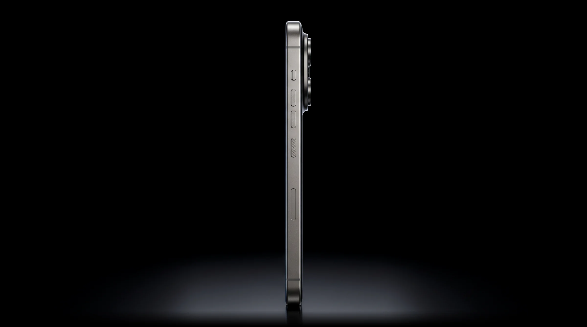
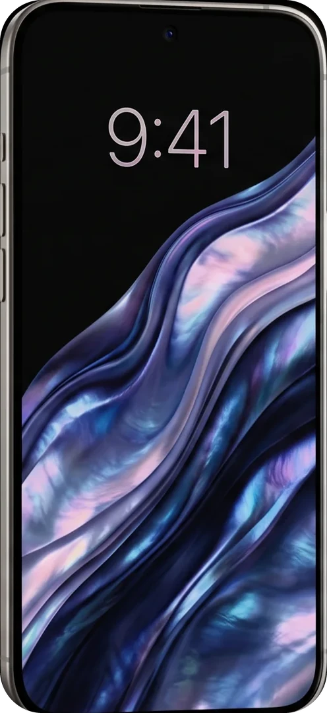
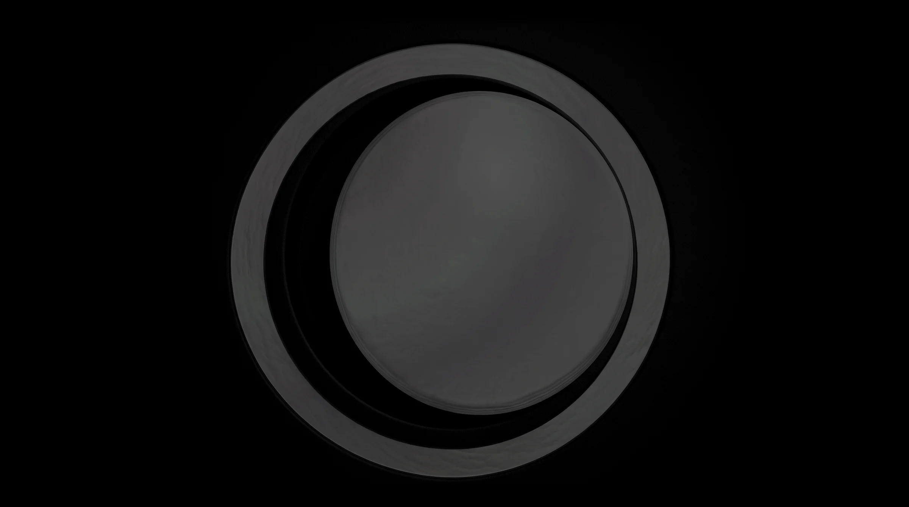
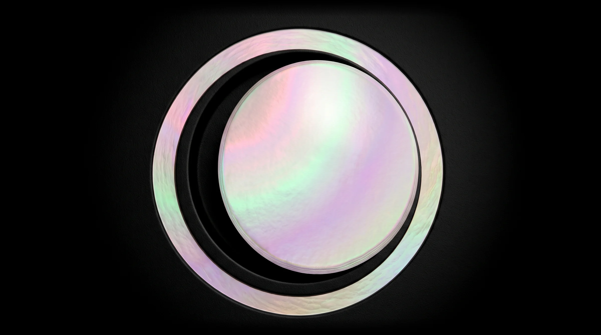
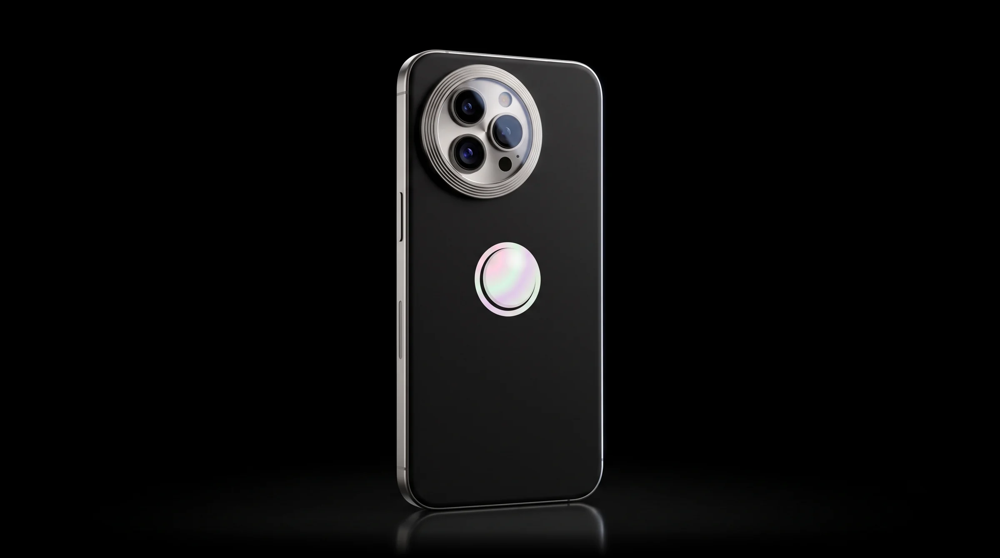
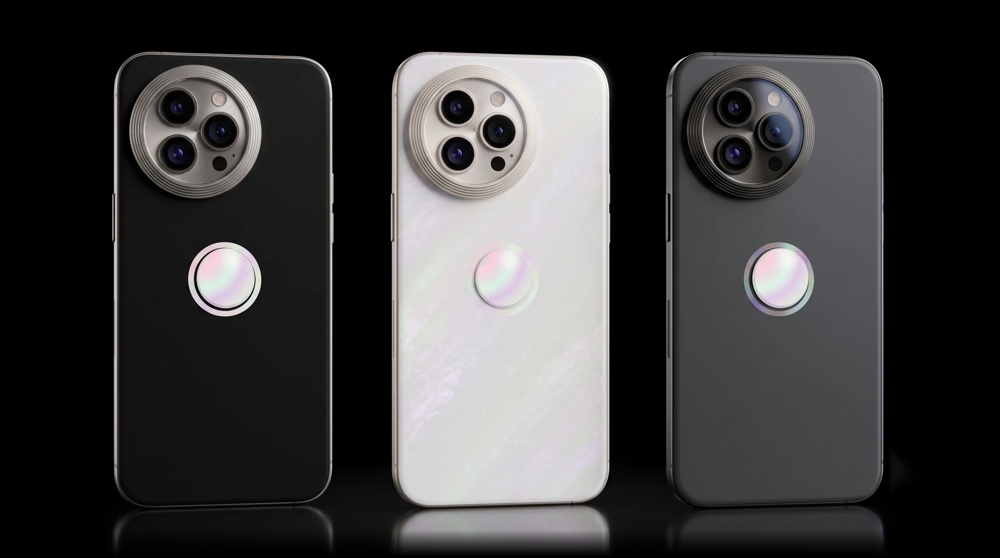
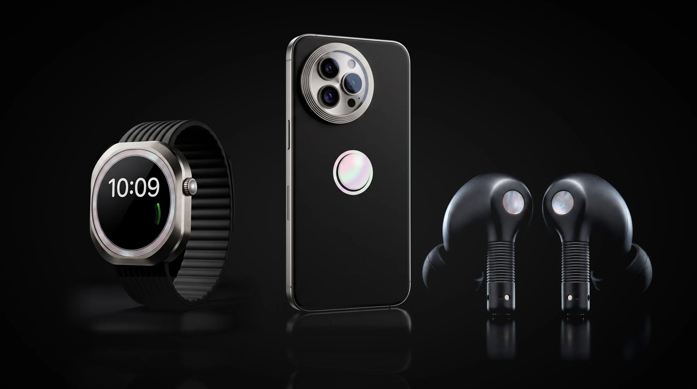

Titanium frame. Milled from one billet of grade 5 titanium. At 199 grams, the lightest Faro yet.
The light that stays on.
From ₹1,19,900 Buy
The 6.7-inch display reaches 3,000 nits in midday sun, then settles to a soft glow after dark, so the screen never outshines the room.
The 6.7-inch display reaches 3,000 nits in midday sun, then settles to a soft glow after dark, so the screen never outshines the room.



A disc of real mother-of-pearl, cut from shell and set flush into the back. No two are alike, and each one answers the light in its own colours.
Design

Titanium frame. Milled from one billet of grade 5 titanium. At 199 grams, the lightest Faro yet.

Ceramic back. Polished to a soft satin, harder than steel and cool in the hand.
Nácar disc. Real mother-of-pearl under sapphire crystal, never quite the same colour twice.
Camera
Three lenses in one titanium tower. The main camera has an aperture that opens and closes with the light, from ƒ/1.4 at night to ƒ/4.0 for a valley in focus.
Main camera
50MP
Variable aperture from ƒ/1.4 to ƒ/4.0
Telephoto
5×
Optical zoom at 120 mm, sharp at night
Ultra wide
48MP
Wider than the room, sharp to the corners
Video
4K 120fps
Night mode in every frame

